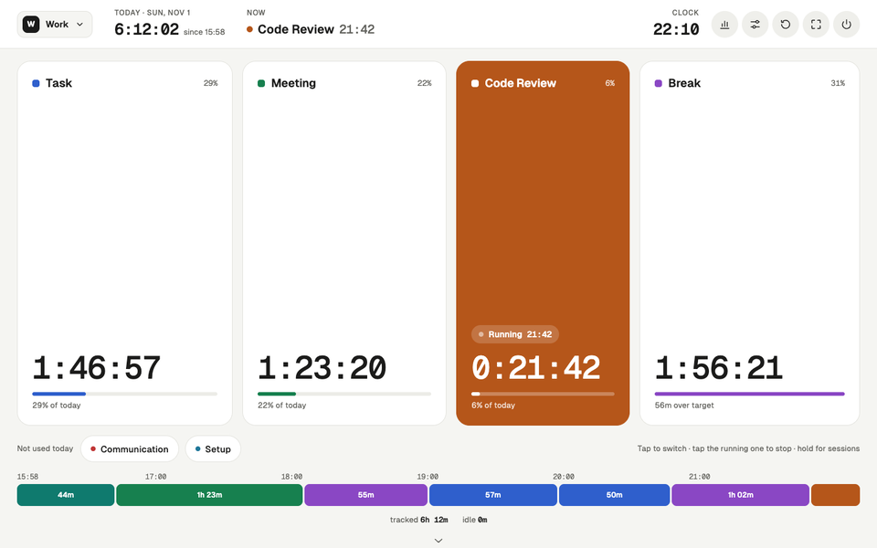
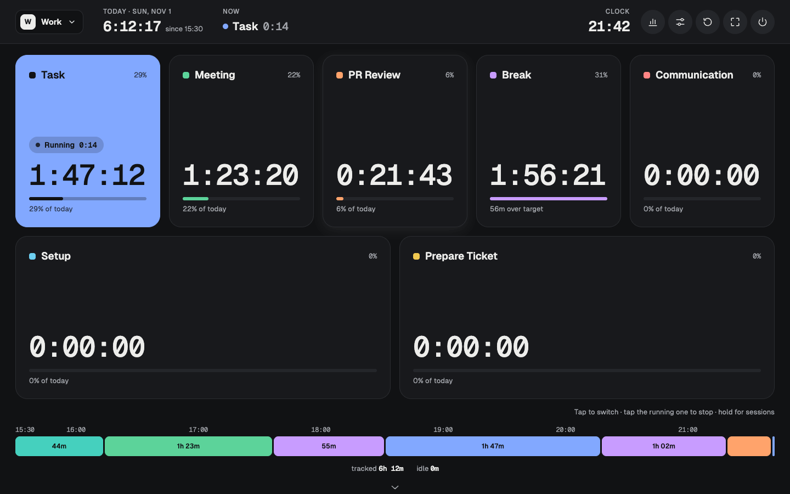
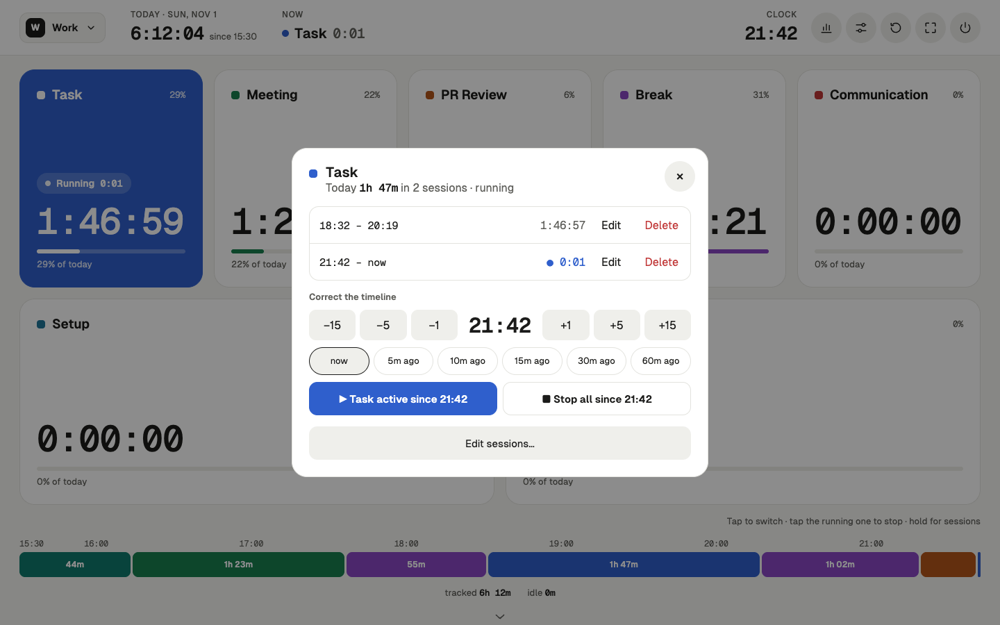
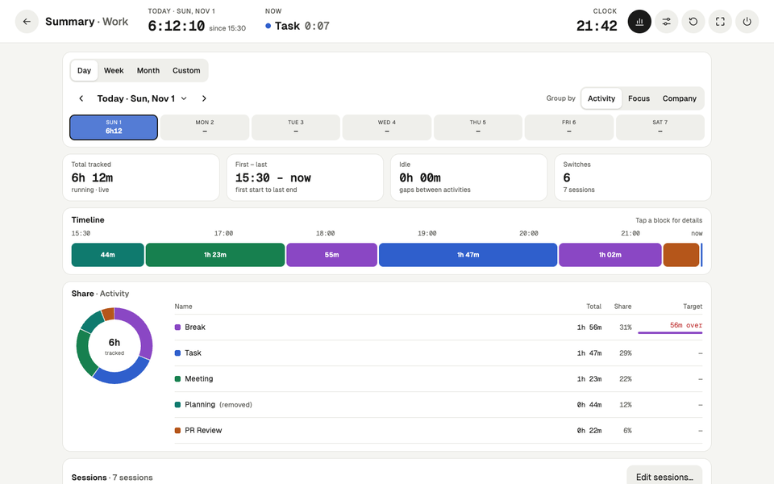
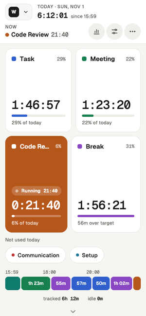

Time Tracker
Open the app
Time Tracker
Open the app
Know where your day actually went
A one-tap time tracker: one big button for each thing you do. Tap when you switch. By evening you see the meetings, the reviews and the “quick questions” laid out hour by hour, without filling in a single timesheet. And it stays yours: no account, and nothing you track ever leaves your device.
The demo runs on three weeks of sample data in its own sandbox. Nothing you do there touches your real tracker. Free.

Switching takes one tap
It works like a chess clock. Tap Meeting and the clock moves to Meeting; tap Task and it moves on. Only one thing runs at a time, so nothing gets counted twice and nothing slips through the cracks.
The buttons are big enough to hit without looking, on a laptop, a tablet by the desk or a touchscreen on the wall.

Forgot to switch? Fix it in two taps
Got pulled into a call and only remembered twenty minutes later? Hold the activity and say “active since 10:40”. The time is taken from whatever was running, so the day still adds up to the minute.
Every session of the day is right there to shorten, move or delete.

Private by design, not by promise
Most trackers want an account, then upload every minute of your day to their cloud. This one has nowhere to send it. Your sessions live in your browser’s own storage on this device, and that is the only copy.
No sign-up, no ads, no cookies. Track the dentist, the job interview and the long lunch without wondering who else gets to see them.
- No account No email, no password. Open it and start tapping.
- Stays on this device Nothing you track is ever uploaded anywhere.
- Nobody reading along No ads, no cookies. The site counts visits anonymously, never what you track, and you can turn that off.
- Yours to take Export a backup file any time and import it on another device.
See the week, not just today
Day, week, month or any range you pick. Every day sits on the same clock, so late starts, long lunches and meeting-heavy Tuesdays jump out at a glance.
Tag activities with your own categories, like deep work versus shallow or alone versus with people, and the whole summary regroups around them.

Fits in your pocket too
On a phone the buttons stack two to a row and the menus slide up from the bottom. Add it to your home screen and it opens like any other app.

Your day is nobody else’s business
No account, and no server that ever sees your day. Everything you track stays in this browser on this device. Export a backup file whenever you like and import it anywhere else. The site only counts visits, anonymously and without cookies, so I know it is worth maintaining. How that works
- Daily targets See at a glance whether you took that hour of breaks.
- Profiles Keep work and home apart, each with its own buttons and history.
- Three layouts Tiles, rows or circles, and buttons that grow with use if you like.
- Seven themes Light, dark or following your system, or import your own.
- Your own day Start the day at 4 am if you work late; it rolls over on its own.
- Full screen Leave it running on a spare screen as a wall clock for your work.
Give it one day.
Track tomorrow from the first coffee to the last message and look at the timeline in the evening. Most people are surprised.